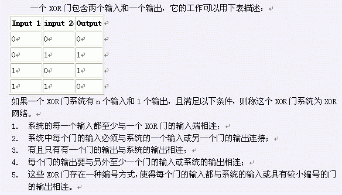
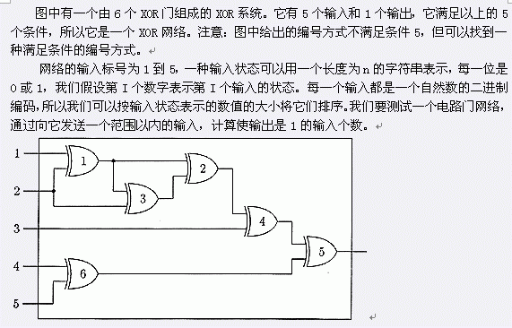

Notice:注册本OJ方式请见https://www.lydsy.com/JudgeOnline/wttl/thread.php?tid=5671
Problem 1553. -- XOR网络1553: XOR网络
Time Limit: 1 Sec Memory Limit: 64 MB
Submit: 38 Solved: 12
[Submit][Status][Discuss]Description


计算给定范围内有多少种输入可以使输出为1。
我们假设3 < n < 100, 3 < m < 3000，而且网络中的门是用1到m之间的数任意编号的。
Input
文件第一行包含三个整数，分别表示输入的个数，门的个数，连接到输出的门的编号。以下的m行描述网络中的连接情况。第I行表示第I个门的两个输入，两个输入为范围[-n,m]之间的一个整数。如果输入是网络的第k个输入，则连接的描述是一个整数－k，如果输入是第j个门，则连接的描述是一个整数j。以下两行各有一个n位二进制串，表示输入的上限和下限。
Output
包含一个整数，表示给定范围内有多少种输入可以使输出为1。
Sample Input
5 6 5
-1 -2
1 3
1 -2
2 -3
4 6
-4 -5
00111
01110
Sample Output
5
HINT
Source
[Submit][Status][Discuss]
HOME
Back